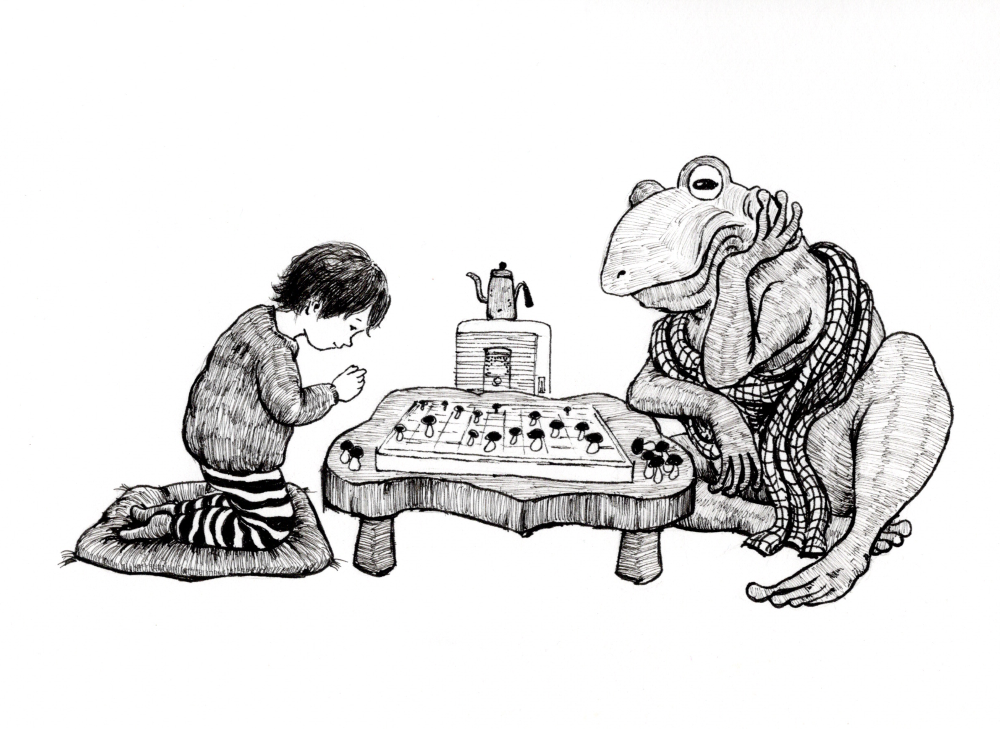
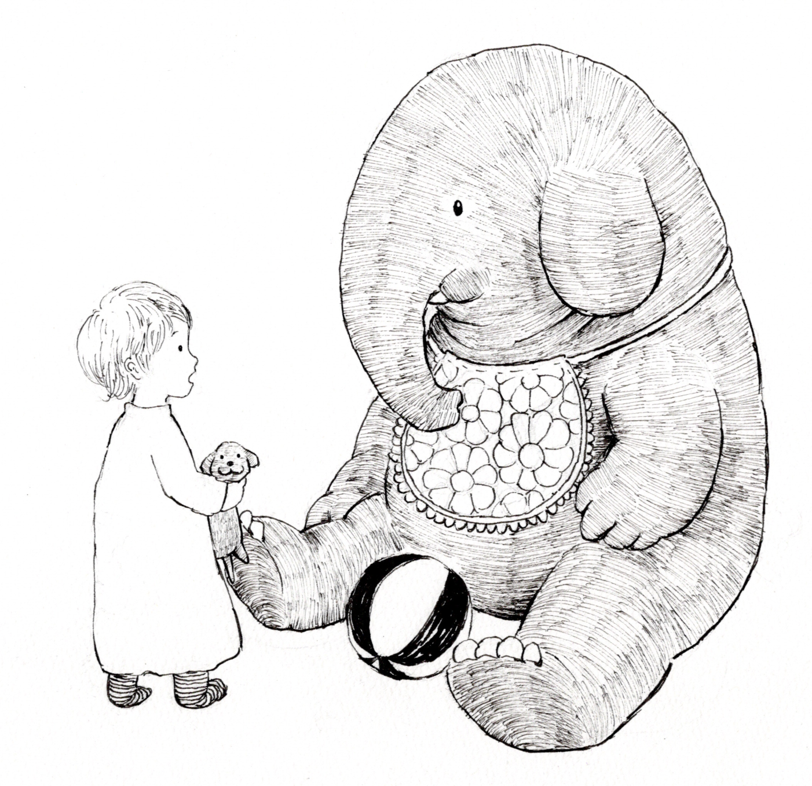
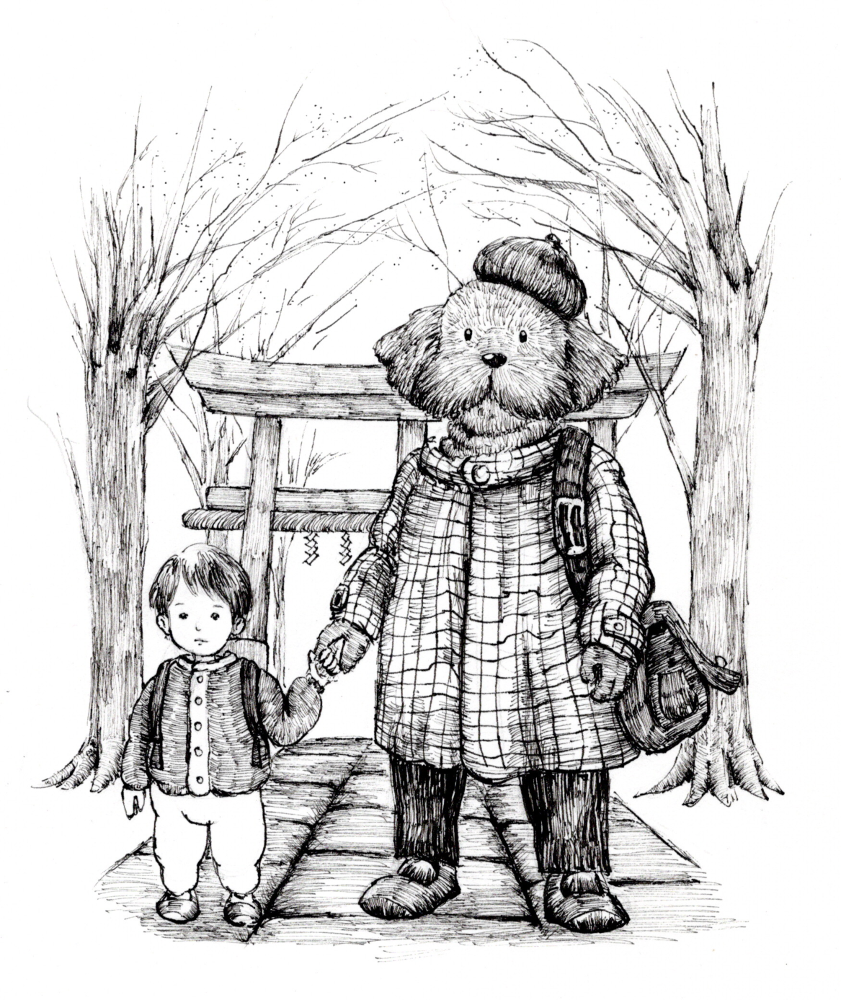
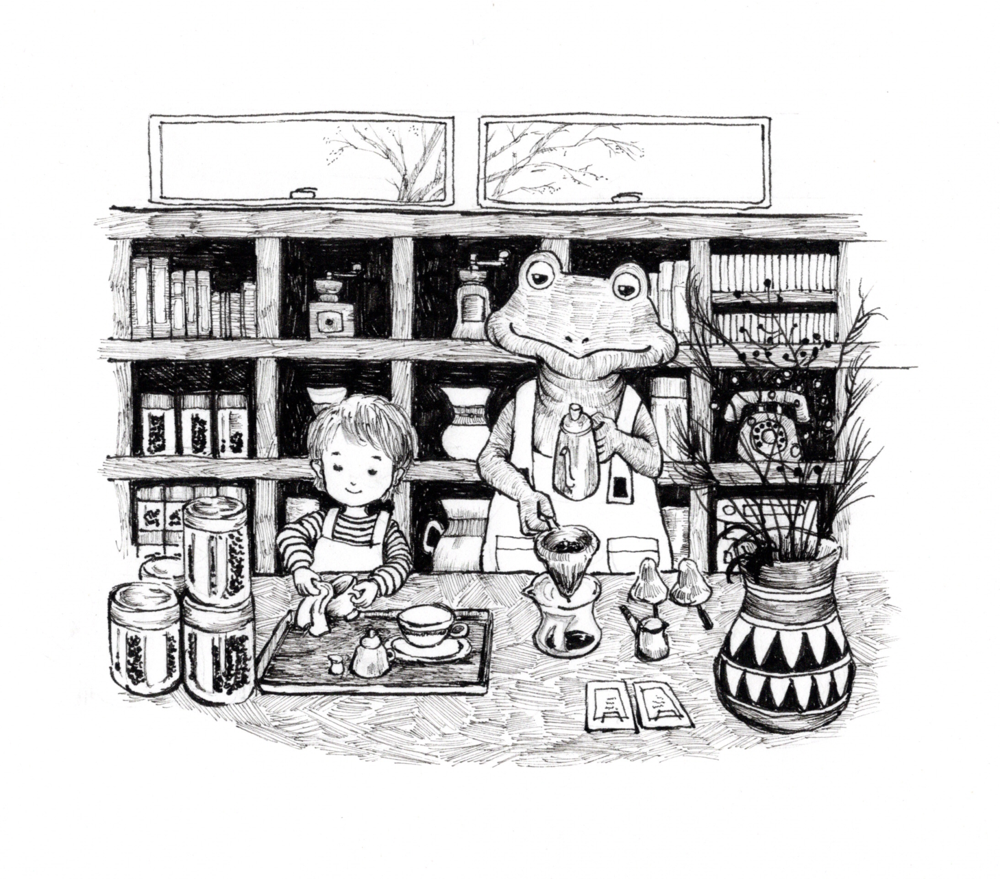

01
「なぜ、同じところでぶつかるのでしょう」
それは偶然ではないのです。人にはそれぞれ、考え方や行動の「癖」があり、その癖が、人生の中にも形を変えて現れるのです。

それは偶然ではないのです。人にはそれぞれ、考え方や行動の「癖」があり、その癖が、人生の中にも形を変えて現れるのです。


話し方。身体の動かし方。人への反応。いつも考えてしまうこと。
ほんの小さな癖に、自分を動かしているものが現れます。
まず、それに気づくこと。そこから変化が始まります。
癖に気づいても、変えようとすると不安になったり、元に戻りたくなったりします。
コーチングでは、その奥にある考え方を見つけ、行動から変えていきます。
何に動かされているのかを知り、どうするかを自分で選ぶ。
自由はすぐそこに。


人や環境を変えても、同じ問題が繰り返されることがあります。
そんなときは、自分の側にある問題の「種」を見ていきましょう。
変えられるものを、一つずつ変えていく。
すると、現実との関係も変わっていきます。

答えを覚えることが目的ではありません。
もともと自分の中にあったものが言葉になり、「そういうことだったのか」と分かる。
それが新たに生きていく力になります。
・リモートコーチング 7,000円
1時間・対面コーチング 10,000円
1時間まずはお気軽にご相談をどうぞ。
他では見つからなかった答えも、ここでは見つかるかもしれませんよ。